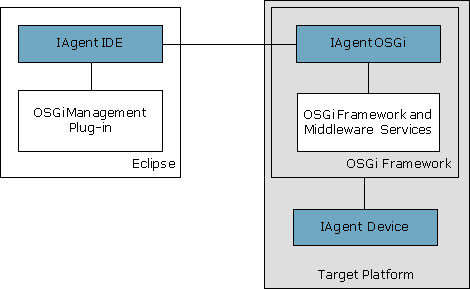

OSGi Frameworks Tree
Remote Console
The OSGi management capabilities of mToolkit allows managing bundles and optionally deployment packages and W3C widgets on the OSGi framework directly from the development environment. This feature is useful for testing the behavior of deployable units (bundles, deployment packages, W3C widgets, etc) in a real OSGi runtime environment, and bug-fixing, profiling and optimizing at runtime. You can change the content of the deployable unit after having installed it on the framework, and update it right away.
mToolkit allows you to create a list of OSGi-enabled devices (also termed as frameworks or OSGi Runtimes) and connect to any of them by simply selecting it from the list and invoking "connect". The list of OSGi devices is placed in a separate view - the Frameworks view.
Once connected, the framework can be ordered to install, start, stop, update and uninstall specific bundles, or install and uninstall deployment packages.
The communication with an OSGi Runtime is acquired over the Instrumentation Agent (IAgent) running on top of it.

To be able to connect your OSGi framework to mToolkit and to Eclipse, you have to install the IAgent OSGi bundle in it. The IAgent OSGi bundle is available here:
<eclipse_home_dir>/plugins/org.tigris.mtoolkit.iagent.rpc_Xxx.jar
Otherwise, in the Frameworks view try to connect to the OSGi framework with missing IAgent and use the Get IAgent option from the displayed error dialog to save the bundle on your computer.
Basically, the IAgent OSGi bundle needs the OSGi Package Admin and Start Level services and the Service Tracker. To use its full capabilities, the OSGi framework should be running its console parser, the OSGi Event Admin service and the Deployment Admin service. For the needs of application management, the framework should also have the OSGi Application Admin service along with a proper application container.

OSGi Frameworks Tree
Remote Console

Adding/Removing an OSGi Runtime
Configuring the Properties of an OSGi Runtime
Connecting to/Disconnecting from an OSGi Runtime
Managing Bundles
Managing Applications
Using the Remote Console
Opening the Web Admin Console inside Eclipse
Customizing OSGi Runtime Management
OSGi Runtime Management Troubleshooting

Frameworks View
Frameworks View Tree Icons
Frameworks View Menus and Toolbar